Home network guide
Connect to the home network and use the home cloud drive from your phone
Just follow the steps; no computer skills needed
1. What you need first
- An iPhone (this guide uses an iPhone)
- Your Apple ID password (you may need it to download apps)
- A phone that can get online (Wi-Fi or mobile data is fine)
- The “personal address” the admin sent you, which looks like this:
https://………/p/a-long-string-of-letters-and-numbers/
2. Pick one
Two apps can connect you home. Pick just one; you don't need both. Not sure which? Ask the admin.
🚀 Option A: Shadowrocket
Paid app- The easiest: one tap sets it up
- No account needed
- Best for: browsing through the home network
🔵 Option B: Tailscale
Free- Sign in with Google or Apple
- The admin has to invite you first
- Best for: people who need the computers at home
3. Open “My page”
Whichever option you pick, you'll use this page. It tells you what you can use and until when, and it's also where you use the cloud drive.
Open the address the admin gave you
Tap the address in LINE or Messages; the iPhone opens it in Safari.
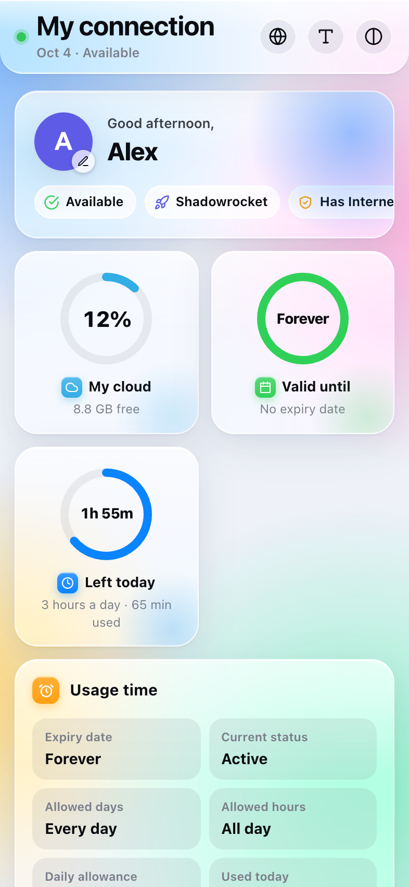
Put it on the Home Screen (one tap from then on)
- Tap the Share button at the bottom middle of Safari (a square with an up arrow ⬆︎)
- Scroll down and tap Add to Home Screen
- Tap Add at the top right
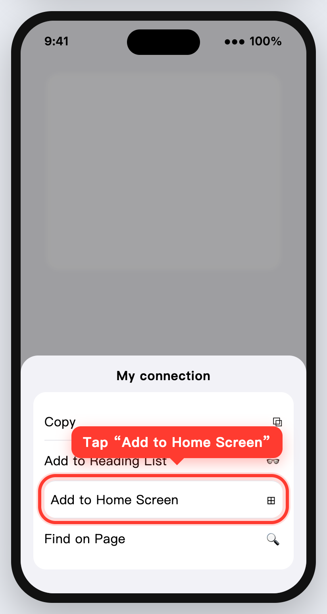
4. Option A: Shadowrocket Paid
Download Shadowrocket
- Open the App Store on the iPhone (the blue “A” icon)
- Tap Search at the bottom right and type Shadowrocket
- Find the app with the blue rocket icon and tap the price button to buy it
- Confirm the payment with Face ID or your Apple ID password
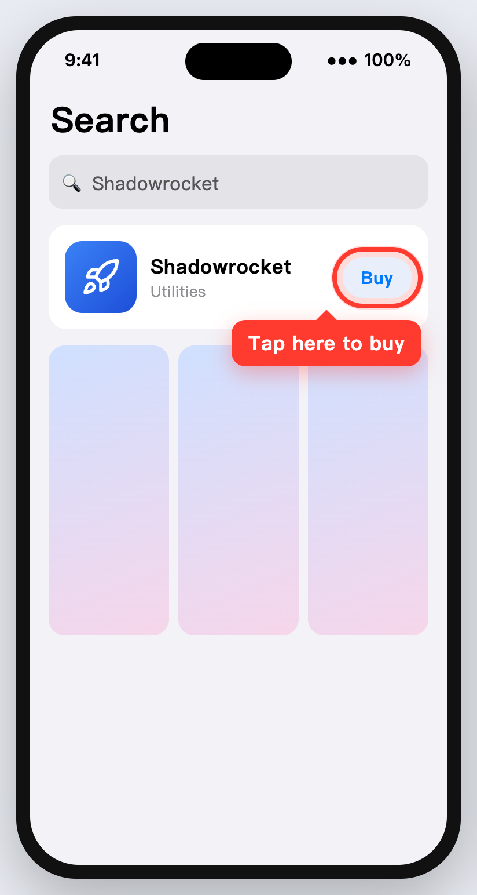
Import it from “My page” in one tap
- Open My page and scroll down to the Shadowrocket section
- Tap the blue Open in Shadowrocket
- When asked “Open in Shadowrocket?”, tap Open
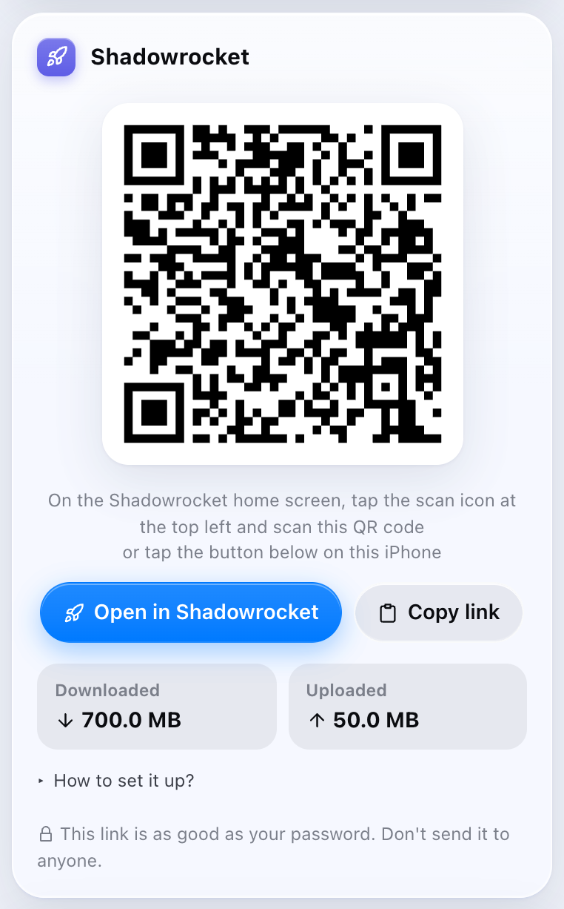
Example only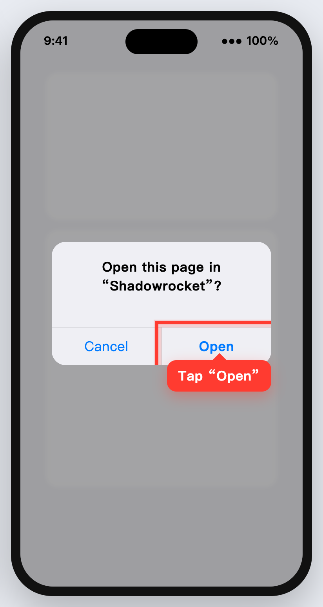
First time: allow the VPN
The first time you flip the switch, the iPhone asks whether to add a VPN configuration. Tap Allow, then enter your iPhone passcode or use Face ID.
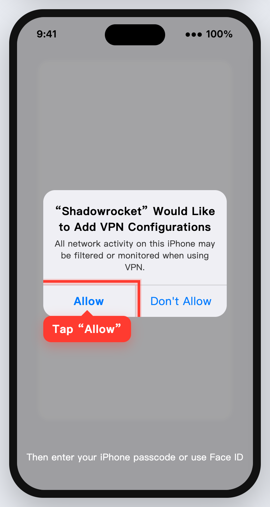
Turn on the switch
- Check that “Home Mac” in the list below has a tick ✓
- Set “Global Routing” to Proxy
- Turn on the switch at the top (it turns green)
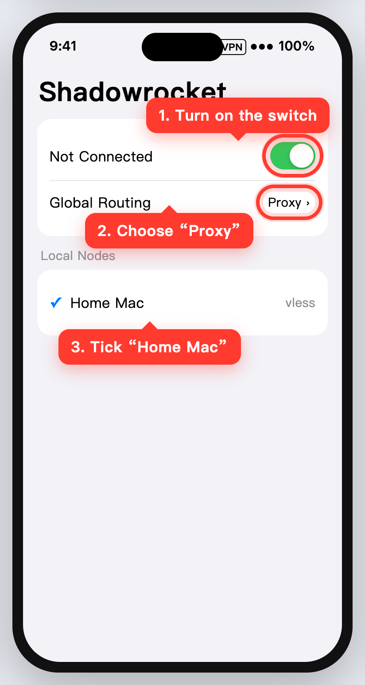
Check that it worked
Open api.ipify.org in Safari; a string of numbers appears. If it matches what the admin told you, it worked!
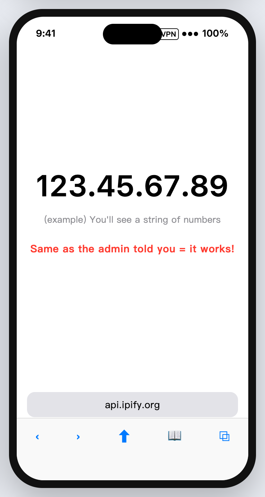
Everyday use
- When you need it: open Shadowrocket and turn on the switch
- When you don't: just turn the switch off (saves battery)
- You can also use the switch in iPhone Settings → VPN
5. Option B: Tailscale Free
Download Tailscale
- Open the App Store and search for Tailscale
- Tap Get (free), then confirm with Face ID or your password
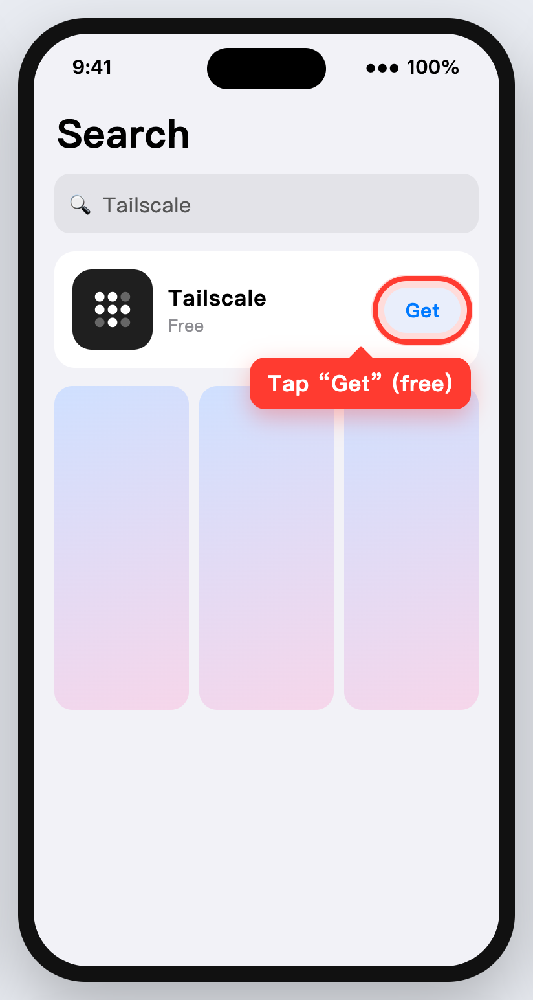
Accept the invite and sign in
- Tap the invite link the admin sent you and tap “Accept”
- Open the Tailscale app and tap Log in
- Sign in with the account you usually use (Google or Apple)
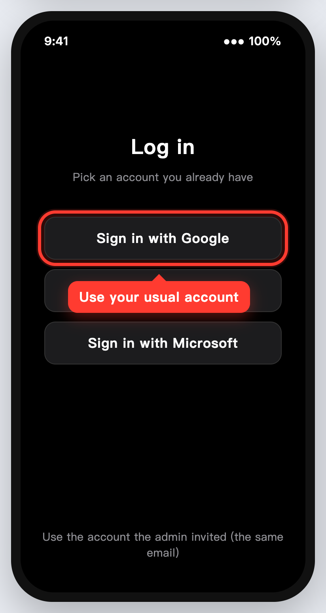
Allow the VPN
As with Shadowrocket, the first time it asks whether to add a VPN configuration (named Tailscale). Tap Allow, then enter your iPhone passcode or use Face ID.
Connect and pick “Home computer”
- Turn on the switch at the top (it turns green)
- Tap Exit Node
- Pick Home computer (ask the admin for the real name)
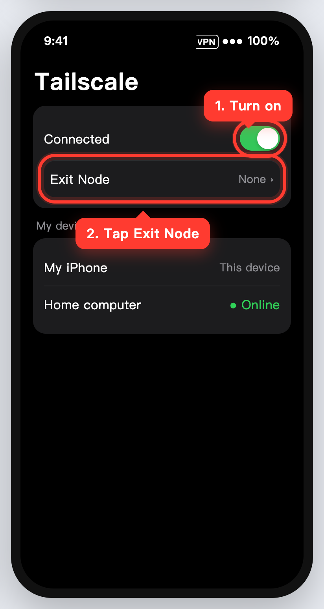
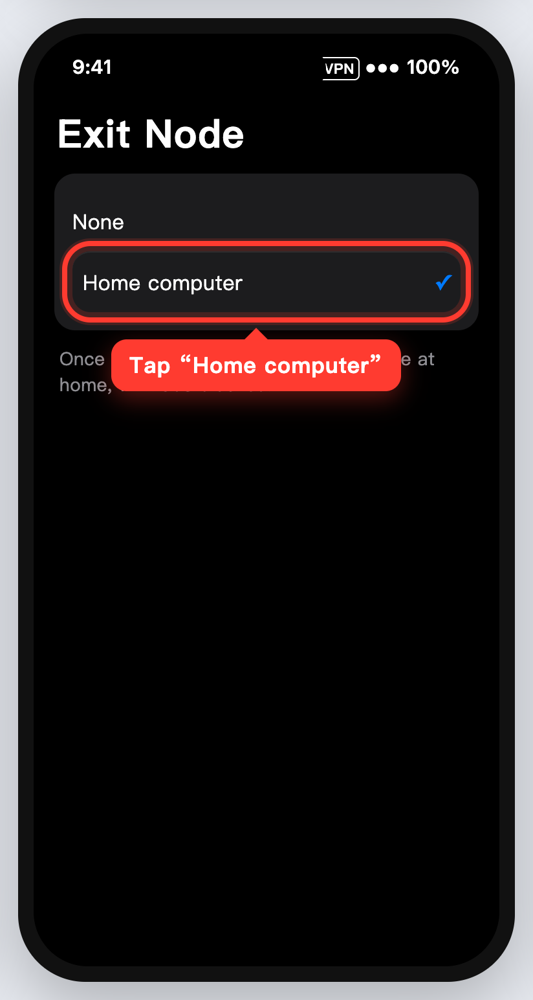
Check that it worked
Same as Option A: open api.ipify.org in Safari; if the numbers match what the admin said, it worked.
6. Keep photos and files in “My cloud”
If the admin turned on the cloud drive for you, My page has “My cloud”. You can keep photos, videos and documents on the drive at home, so nothing is lost when you change phones.
Two folders
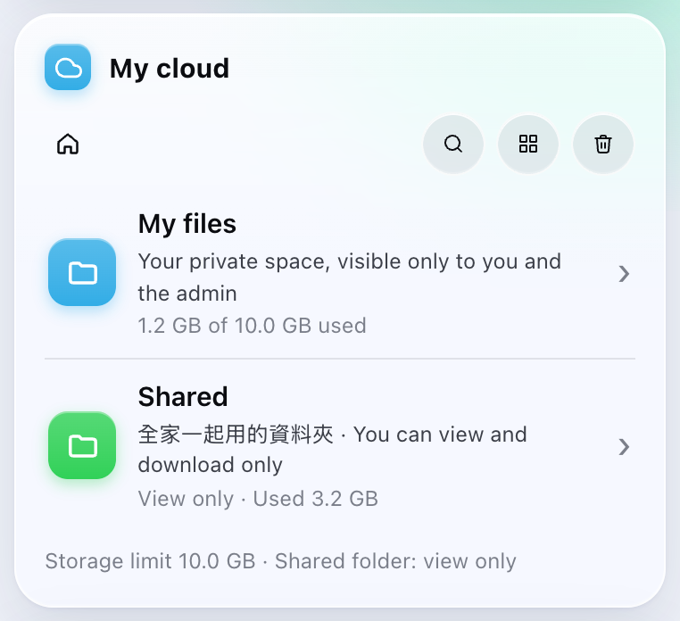
- My files: your own space, visible only to you and the admin. It shows how much you've used and your limit.
- Shared: a folder the whole family uses. Whether you can put things in it is up to the admin.
Upload photos or videos
- Tap My files to open it
- Tap the blue Upload
- Choose Photo Library, tick the photos or videos to upload, and tap Add
- When the progress bar finishes, “Uploaded” appears. Under the bar you see the speed and how long is left
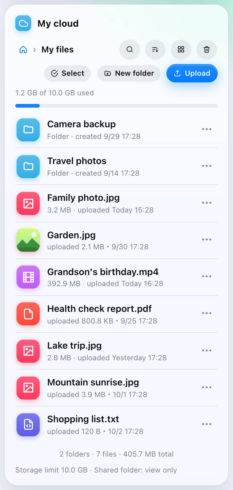
What the small buttons at the top do
- 🔍 Search: type part of a file name, e.g. “birthday”, to find every file with “birthday” in any folder
- ↕️ Sort: by name, upload time, modified time, size or type. To see the newest uploads, pick “Uploaded”
- ▦ Switch view: between “list” and “album”. Album view shows photos in a grid, like the phone's Photos app
- 🗑 Trash: deleted things go here first (see step 6)
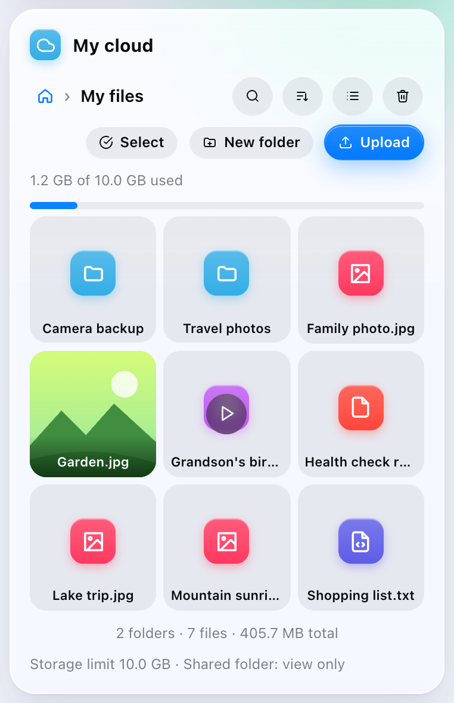
Tap to view it right away
No download needed; tap to open on the phone:
- Photos, videos, music: view and play directly. Swipe left or right for the previous or next one
- PDF, Word, Excel, PowerPoint, Pages, Keynote: shows the first page. For PDFs tap Open PDF to see it all; for Word tap View text for the full text
- Text files (.txt), spreadsheets (.csv): the content is shown directly; CSV appears as a table

Tap ⋯ for more
Every file has ⋯ on the right. Tap it to see:
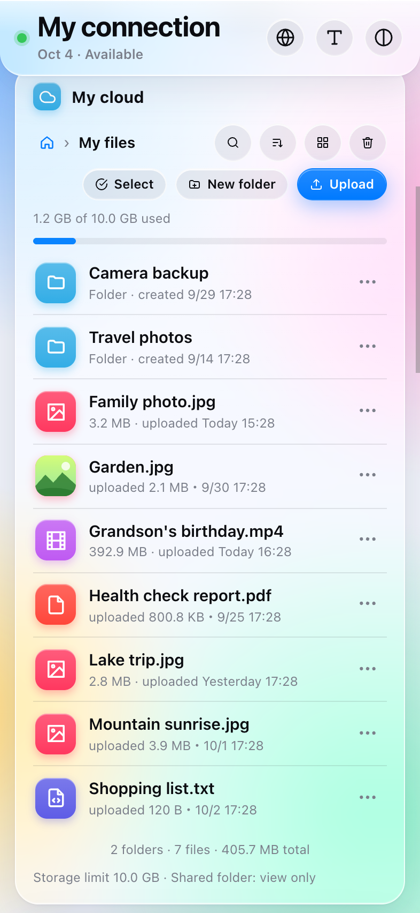
- Download: save it to the phone. For a folder this becomes Download ZIP, downloading the whole folder at once
- Details: see the file size, upload time, photo megapixels or video length
- Share: make a link to send to friends (see “Share with others” below)
- Rename, Move (to another folder), Delete
Tidy up many files at once
- Tap Select
- Tap the files to tidy up; a blue tick ✓ appears in front (tap Select all to tick them all)
- Tap Move to put them in another folder, or Delete
- When you're done, tap Done
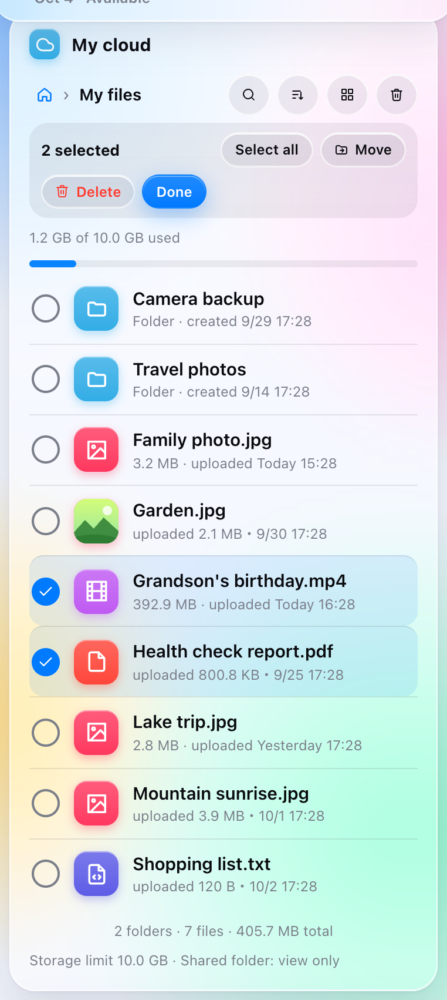
Move shows a list of folders: tap a folder to go in, and once you're where you want them, tap Move here.
Deleted something by mistake? Get it back from the Trash
Deleted files don't disappear right away: they stay in the Trash for 30 days before being cleared automatically.
- Tap 🗑 Trash in the row at the top
- Find the file and tap Restore; it goes back to its original folder
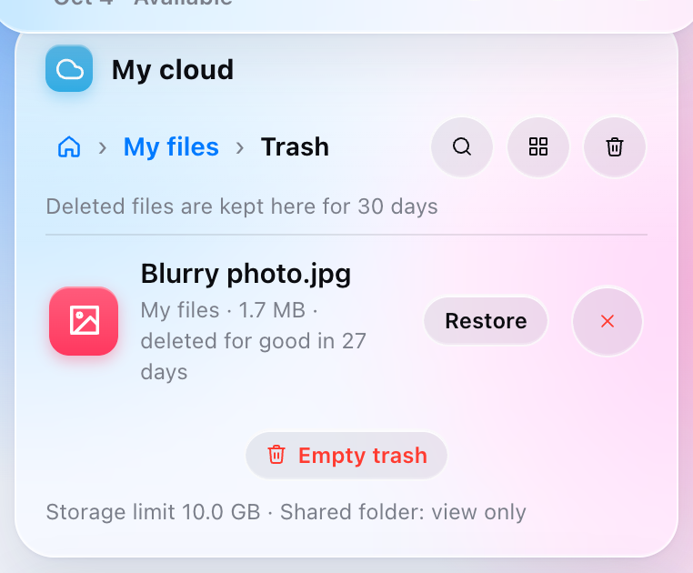
Share with others (they don't need any app)
- On a file or folder tap ⋯ → Share
- Pick how long it's valid (1 day, 7 days, 30 days, forever)
- You can limit how many downloads and also set a password
- Tap Create link; the link is copied automatically, so just paste it into LINE and send it

7. Back up iPhone photos every day
The iPhone's built-in Shortcuts app saves the day's photos to the “Camera backup” folder in your cloud every night. No extra app and no VPN needed; any Internet connection works.
First copy your upload address
On My page find “iPhone photo auto-backup” and tap Copy upload address.
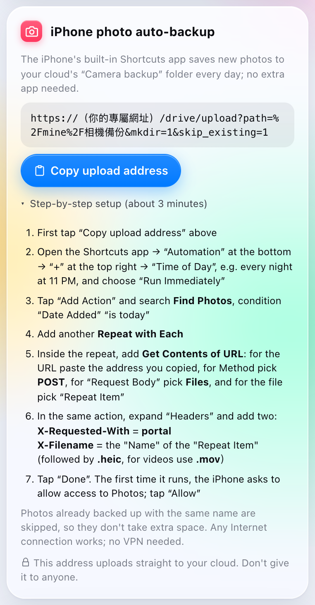
Add an automation in the Shortcuts app
- Open the Shortcuts app (if you can't find it, swipe down on the Home Screen and search “Shortcuts”)
- Tap Automation at the bottom, then ＋ at the top right
- Pick Time of Day, set it to 11:00 PM every day, choose Run Immediately and tap Next
Add three actions
- Tap New Blank Automation, search for Find Photos and add it. Tap “Add Filter” and set it to Date Added · is today
- Then search for Repeat with Each and add it
- Inside the “Repeat”, add Get Contents of URL:
- URL: paste the address you just copied
- Tap “Show More” and set Method to POST
- Set Request Body to File, and the file to Repeat Item
- Under Headers tap “Add new header” twice:
First: nameX-Requested-With, valueportal
Second: nameX-Filename, value: the Name of Repeat Item, followed by.heic
(if Settings → Camera → Formats is set to “Most Compatible”, type.jpginstead)
Try it once
Tap ▶︎ at the bottom right to try it. The first time, the iPhone asks to allow access to Photos; tap Allow. Then check “My cloud → My files → Camera backup”; today's photos should be there.
8. Other handy features
Large text (for older family members)
Tap T at the top right of your page and all the text and buttons get bigger. This phone remembers it, so it's still large next time. Tap T again to go back to normal size.
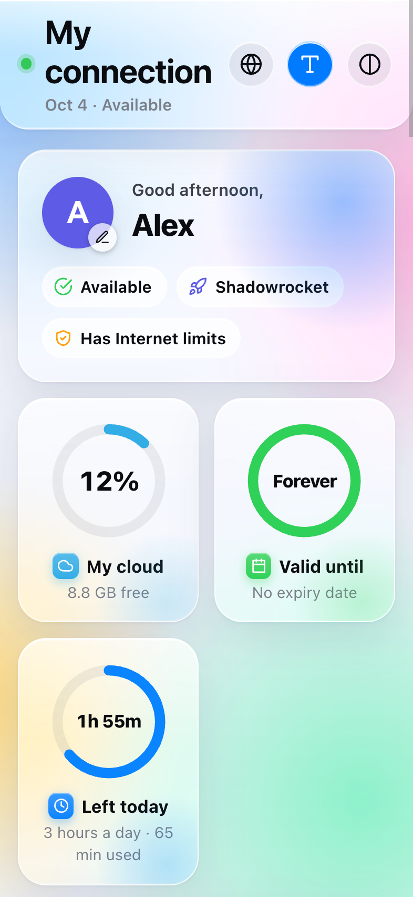
How much time is left today
If the admin set how long you can use it each day, your page shows a blue ring “Left today” with the minutes remaining.
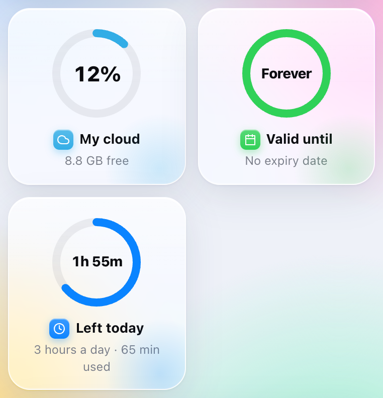
- Time only counts while you're actually using the Internet; leaving it on without using it doesn't count
- When the time is up you can't connect for the rest of the day; it resets automatically at midnight
- Not enough? Send a message asking the admin for more
Message the admin
To extend your access, get more cloud space or more daily time, or if something's wrong, send a message right from the page:
- Under “Message the admin”, pick a topic, e.g. More cloud storage
- Add details in the box below if you like (optional)
- Tap Send
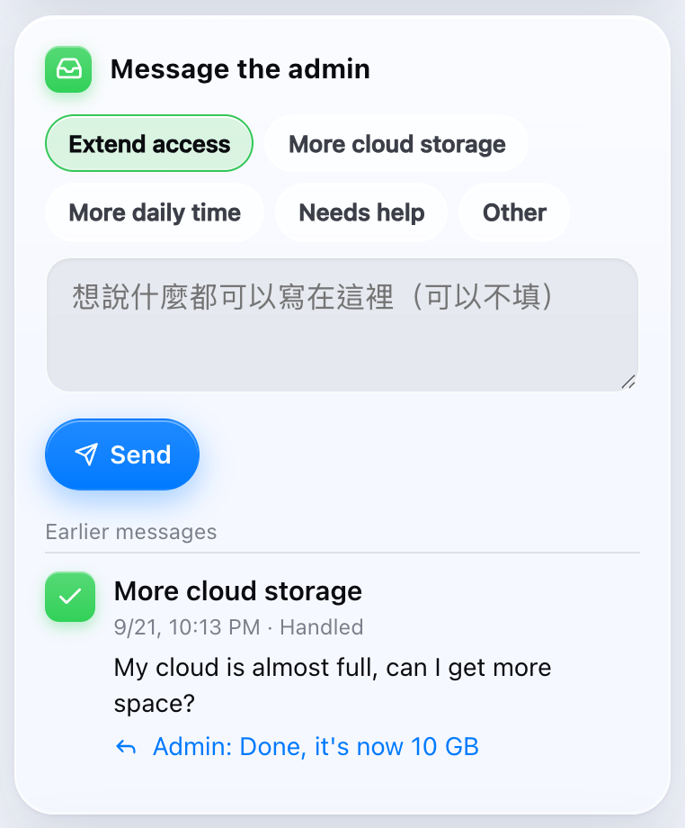
The admin's phone gets a notification right away. Their reply appears under “Earlier messages”; a green tick means it's been handled.
Speed test
When things feel slow, go to “Connection check” at the bottom of the page and tap Start next to Speed test; after about 10 seconds you see the download and upload speed.
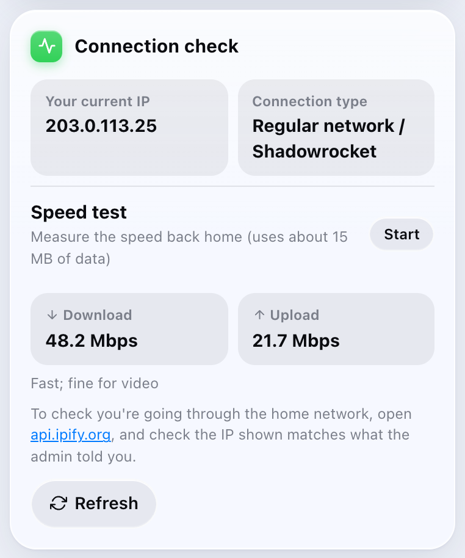
- 20 Mbps or more: fast, fine for video
- 5–20 Mbps: fine for everyday use
- Under 5 Mbps: slow; try another spot or another Wi-Fi
9. Check on the Mac at home Control panel users
The home network and cloud run on one Mac. If the admin gave you the “control panel”, you can see how busy and how hot it is and how its battery is doing. This page is view-only and changes no settings, so don't worry.
Open the “Mac” page
- Open the control panel (turn on Tailscale first)
- Tap Settings at the bottom, then Mac at the top
Or on the control panel's home page, tap the CPU or Memory ring to jump straight here.
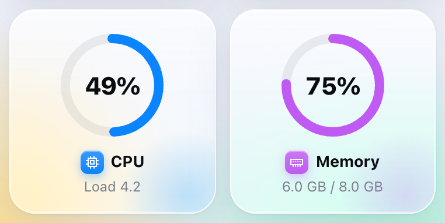
At the top: the current state at a glance
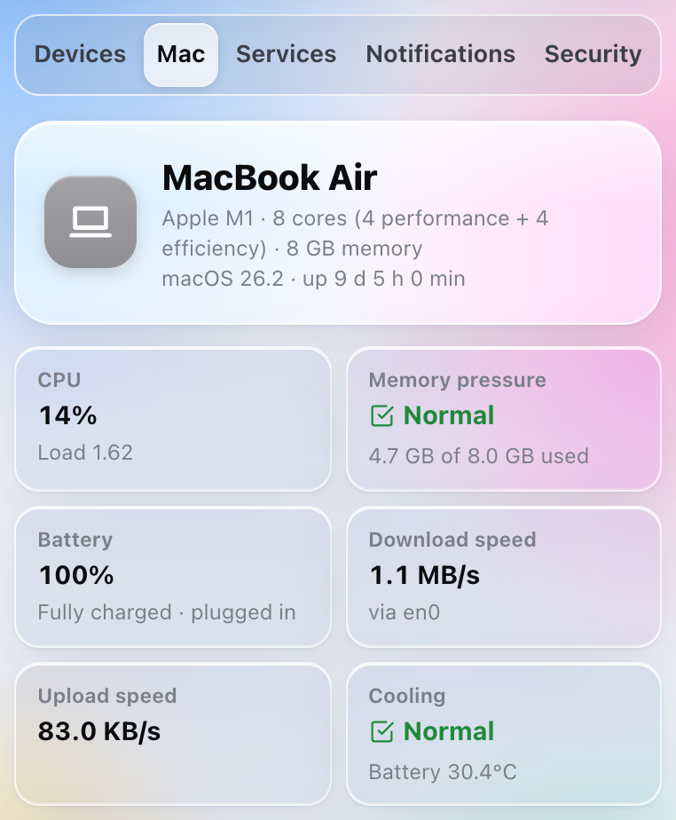
- CPU: how busy the computer is. Usually under 20%; brief spikes are fine
- Memory pressure: green “Normal” is good; orange “High” means too many apps are open and the computer slows down
- Download / upload speed: how much data the Mac at home is moving right now
- Cooling: green “Normal”; a red “Throttled from heat” means it's too hot and slows itself down
Trends: the last 24 hours
Choose the last 1 hour, 6 hours or 24 hours. Tap the chart with a finger to see the numbers at that time; tap outside the chart to hide them.
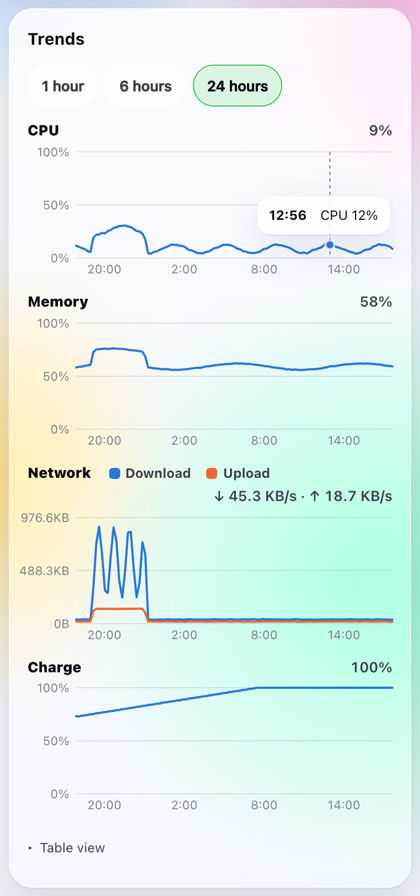
Not a fan of charts? Tap Table view at the bottom to list the numbers for each time.
Battery
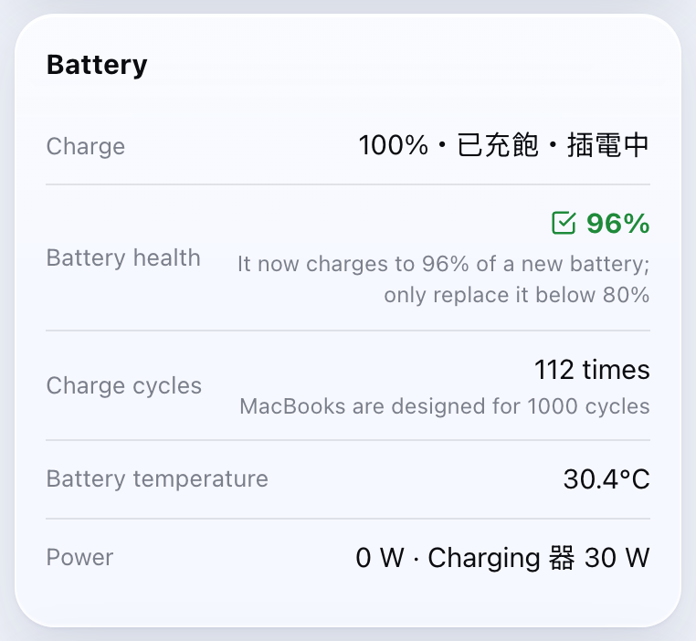
- Battery health: how full the battery charges compared to a new one. 80% or more is normal; only below 80% should you think about replacing it
- Charge cycles: how many rounds the battery has done. MacBooks are designed for 1000
- Battery temperature: the 30s °C are normal; above 40 °C it turns orange as a warning
Memory: why the computer gets slow
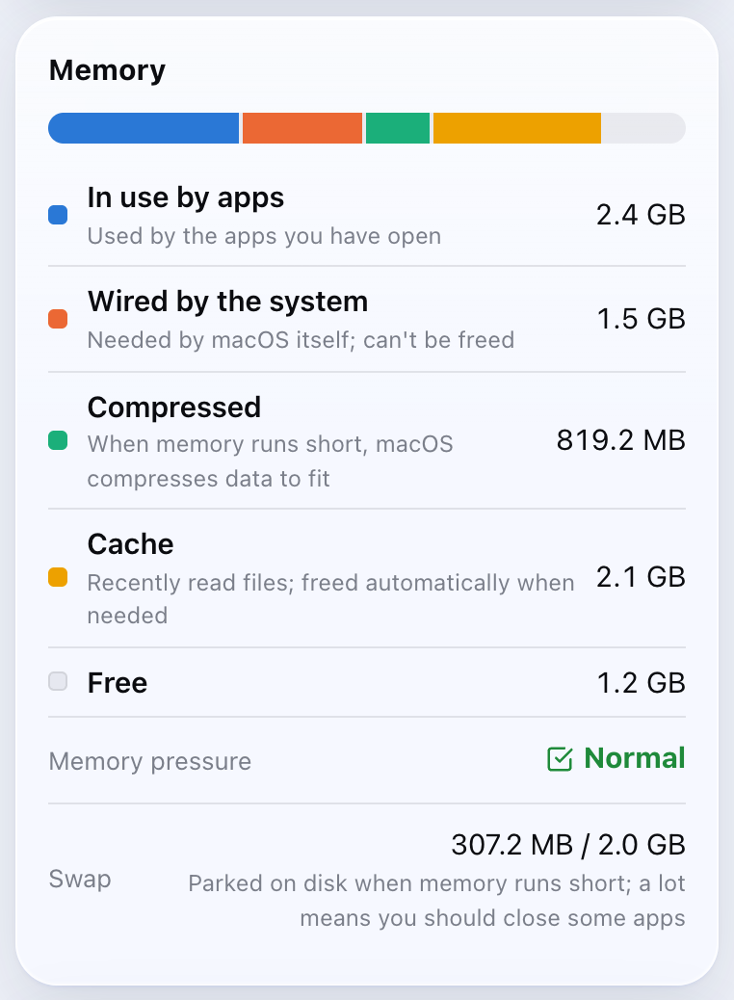
- The bar has several colors, each with a note and its usage beside it
- Cache is nothing to worry about; it's freed automatically when needed
- Lots of compressed memory and swap means memory is short; the computer gets slow and hot
Heaviest apps
Switch between sorting By CPU or By memory. Many copies of the same app (e.g. each browser tab) are combined into one row marked ×count.
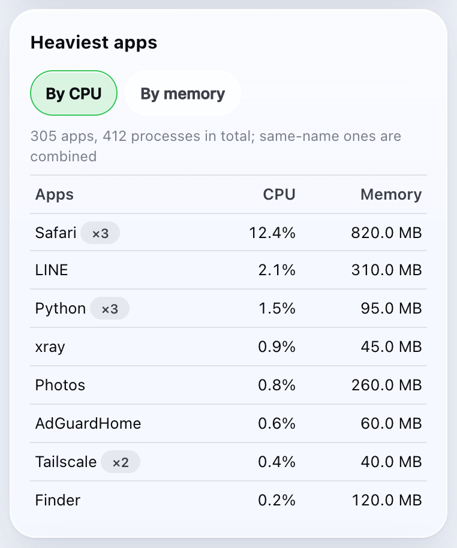
10. Control a Windows PC from your phone Admin
If there's a Windows PC at home, you can control it from your phone just like the Mac: see whether it's in use, skip songs, change the volume, pop up a notice for whoever is using it, lock it, shut it down. Only the admin (the control panel owner) sees this feature.
Install Tailscale on Windows first
- On Windows, download and install it from tailscale.com/download
- Sign in with the same account as your phone (important: a different account won't connect)
- The Tailscale icon at the bottom right must show Connected
Make the install command on your phone
- Open the control panel and tap Remote at the bottom
- Tap ＋ Windows at the top, then Make install command
- Tap Copy command and send it to the Windows PC over LINE or email
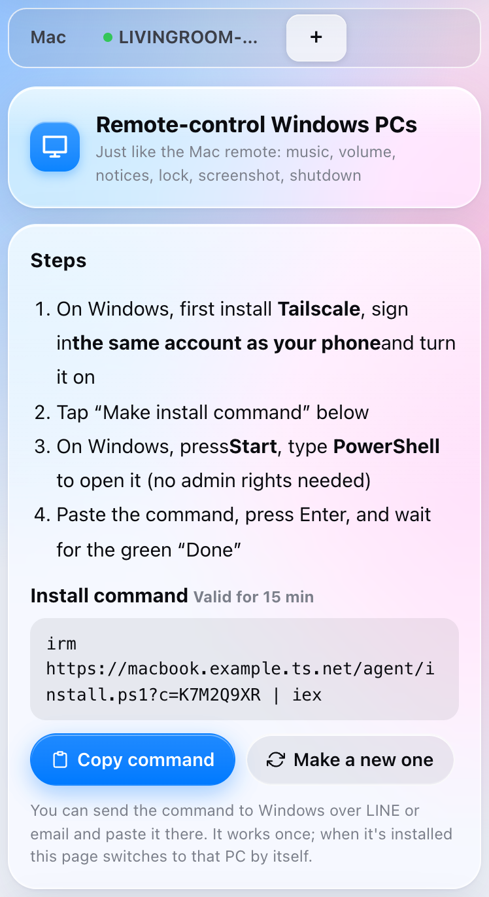
Paste the command on Windows
- Press the ⊞ Windows key (or Start at the bottom left), type PowerShell and press Enter to open it
- In the blue or black window, right-click (or Ctrl+V) to paste the command, then press Enter
- When you see a green “Done!”, you're finished and can close the window
See its status and control music
The buttons at the top switch between the Mac and each Windows PC. A green dot next to the name means the PC is on and reachable.
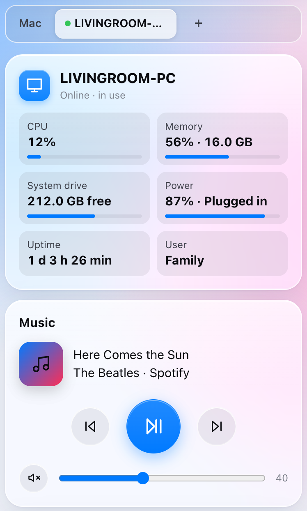
- Online · in use / idle / locked: tells you whether someone is using the PC right now
- Music: see what's playing in Spotify, YouTube in a browser and more; pause, skip songs, change the volume
Screen and power
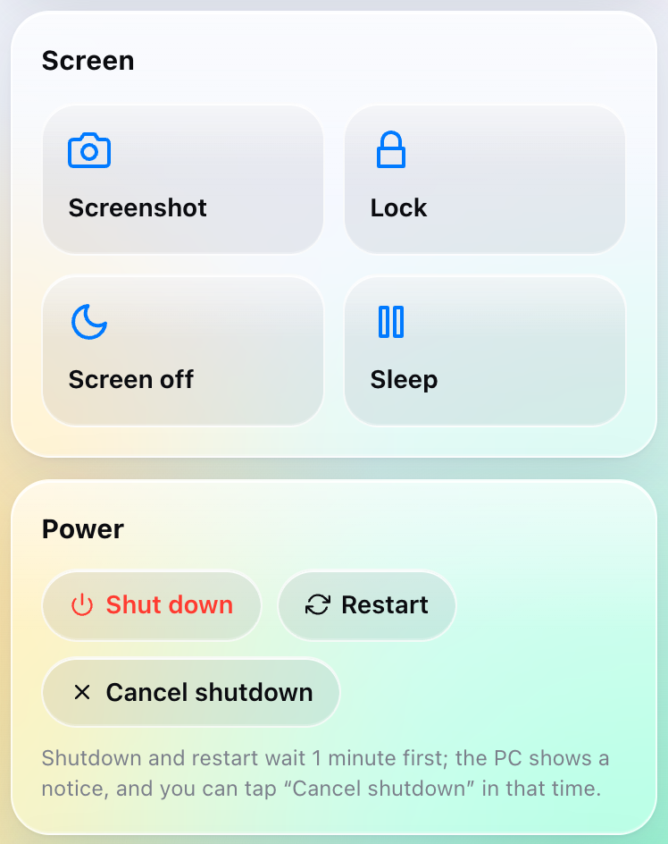
- Screenshot: see what's on the PC's screen now (not while it's locked)
- Sleep, shut down and restart need two taps, so you don't trigger them by accident
- Shutdown and restart wait 1 minute first and show a notice on the PC; changed your mind? Tap Cancel shutdown
Further down: pop up a notice and read aloud (e.g. “Dinner's ready!”), clipboard sync (send text between phone and PC), and open a web address on the PC.
Done with it: remove
At the bottom of that PC's page tap Remove this PC (two taps). If the PC is on, the app on it deletes itself; if it's off, it's removed next time it starts and connects.
11. Report a problem to the admin
Page won't open, cloud upload failed, can't get online… whenever something seems off, tell the admin right from your page. No need to type much: pick a few options and add a screenshot.
Find “Report a problem”
Open your page, scroll down to the orange “Report a problem” and tap Report a problem.
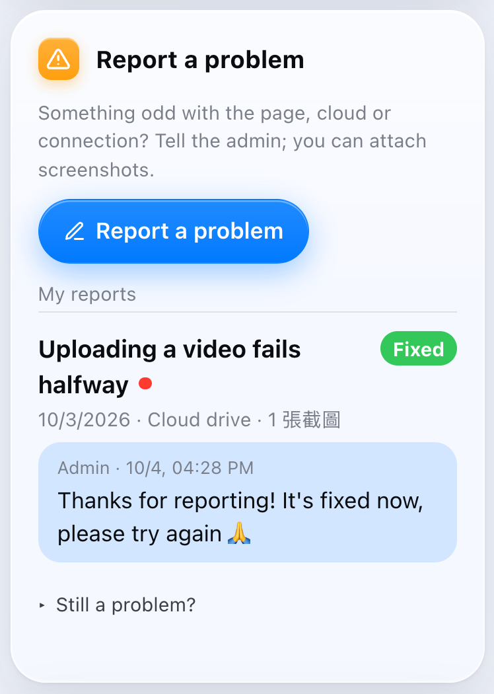
Just fill it in
- Where's the problem?: pick cloud drive, Internet / connection, My page…
- How serious is it?: minor, some impact, or doesn't work at all
- Describe what happened in one sentence: e.g. “Uploading a video fails halfway”
- Details: optional, but it helps find the cause faster
- Screenshots: tap Choose screenshots and pick up to 3 from your photos
- Tap Send report; the admin's phone gets a notification right away
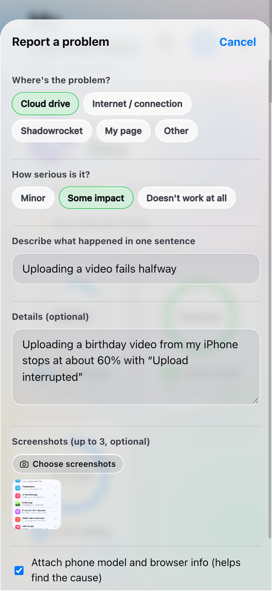
See the admin's reply
- When the admin replies, a red dot 🔴 appears next to the title
- The label on the right shows the progress: New → In progress → Fixed
- To add more, type in the box below and tap Send
- Marked “Fixed” but still broken? Tap “Still a problem?” to tell the admin; the report goes back on their to-do list
12. Troubleshooting
Windows remote: a red “Install failed” after pasting the command
- Check that Tailscale is connected at the bottom right of Windows, signed in with the same account as your phone.
- The command works once and for 15 minutes: on your phone tap Make a new one and paste the new command.
- Paste it into PowerShell, not “Command Prompt (cmd)”.
Windows remote: the PC always shows “Offline” and the buttons are grey
No Internet after turning it on
- First turn the Shadowrocket (or Tailscale) switch off and on again.
- Still no luck? Turn the switch off for now and the phone goes back to its normal Internet.
- Tell the admin with Report a problem (choose “Doesn't work at all”): the computer at home may be off or the Internet may be down.
My page says “access isn't active” or shows red text
- Outside allowed hours: the admin set the times you can use it; it works again when that time comes.
- Expired: your access period ended; ask the admin whether to extend it.
- Disabled: the admin turned it off for now; ask them.
It says “Today's time is used up”
My page says “Page not found” or “address no longer works”
A red dot next to “Home Mac” in Shadowrocket
Some apps or sites won't open
Upload fails with “Over your storage limit”
The photo auto-backup didn't run
- The shortcut says “The admin hasn't allowed photo auto-backup for you”: ask the admin to turn it on in the control panel.
- Open the Shortcuts app → “Automation” and check the automation is on and set to “Run Immediately”.
- Tap ▶︎ once by hand and see whether an error message appears.
- It says “forbidden”: check the names of the two “headers” for typos (upper and lower case must match too).
- It says “Over your storage limit”: the cloud is full; delete old files or ask the admin for more space.
A friend says the share link won't open
Photos in the cloud look grey, without thumbnails
I can't find the “Mac” page in the control panel
What if I get a new phone?
Can I have Shadowrocket and Tailscale on at the same time?
13. Safety tips
- Don't send your personal address to others or post it in groups
- Don't share screenshots of your Shadowrocket QR code
- If it gets out by accident, tell the admin right away; they can give you a new one and the old one stops working at once
- Don't give the photo auto-backup upload address to anyone; whoever has it can put files into your cloud
- Once a share link is out, anyone with it can download. For important files, remember to set a password and an expiry
- If someone claiming to be the admin asks for your password or a code, call the real person to check first